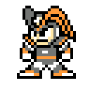

Een robot die is gemaakt door Dr. Light als laboratoriumassistent. Deze jonge jongen wil altijd het goede doen. Hij heeft alweer gevraagd om te worden omgebouwd voor het gevecht om de wereld te beschermen.
Dr. Light
Een geniale wetenschapper die door zijn talloze robotcreaties als dé robotexpert wordt gezien. Hij zorgt voor Mega Man en Roll alsof het zijn eigen kinderen zijn. Zijn diepste wens is een wereld zonder pijn en conflict te zien.
Dr. Wily
Een zeer intelligente wetenschapper die verantwoordelijk is voor vele slechte daden in het verleden. Hij heeft de recente uitbraak van roboenza bestudeerd. Wat wil hij bereiken?
Roll
Een door Dr. Light gecreëerde robotassistent. Ze lijkt wel het kleine zusje van Mega Man. Ze is met name goed in koken en huishoudelijk werk.
Auto
Een door Dr. Light gecreëerde robotassistent. Hij brengt zijn dagen door met zoeken naar manieren om Mega Man te helpen bij zijn gevechten.
Rush
De trouwe robothond, vriend en rechterhand van Mega Man.
Proto Man
Een vroeg prototype-robot ontworpen door Dr. Light. Hij is Mega Man al enkele keren te hulp geschoten.
Bass

Een robotontwerp door Dr. Wily. Hij is de grootste rivaal van Mega Man.